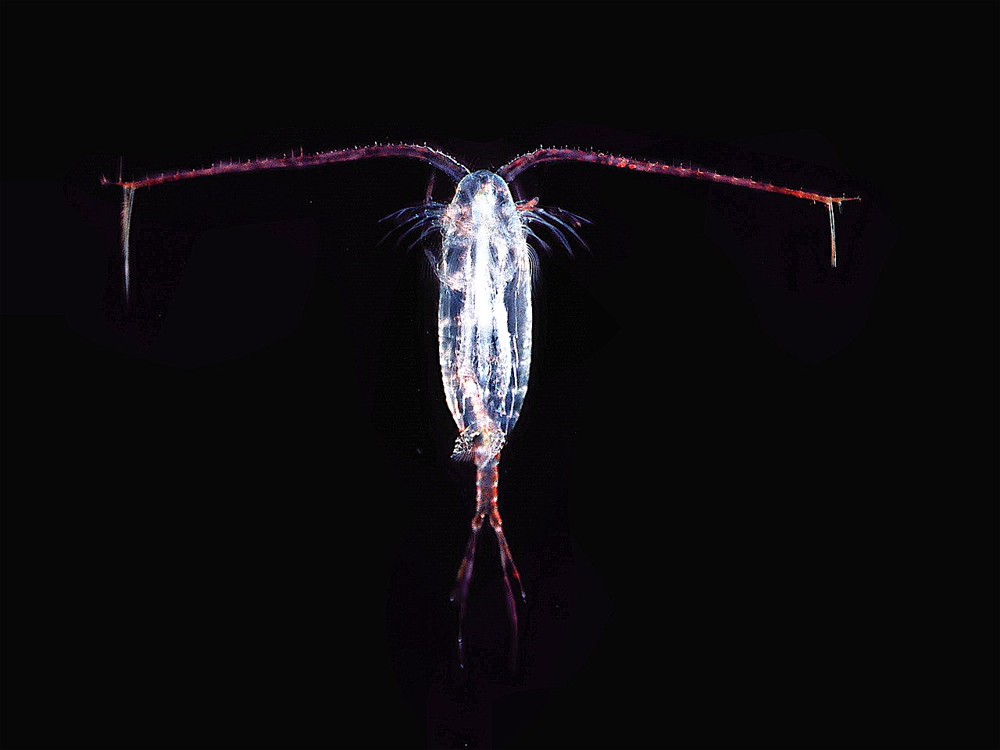
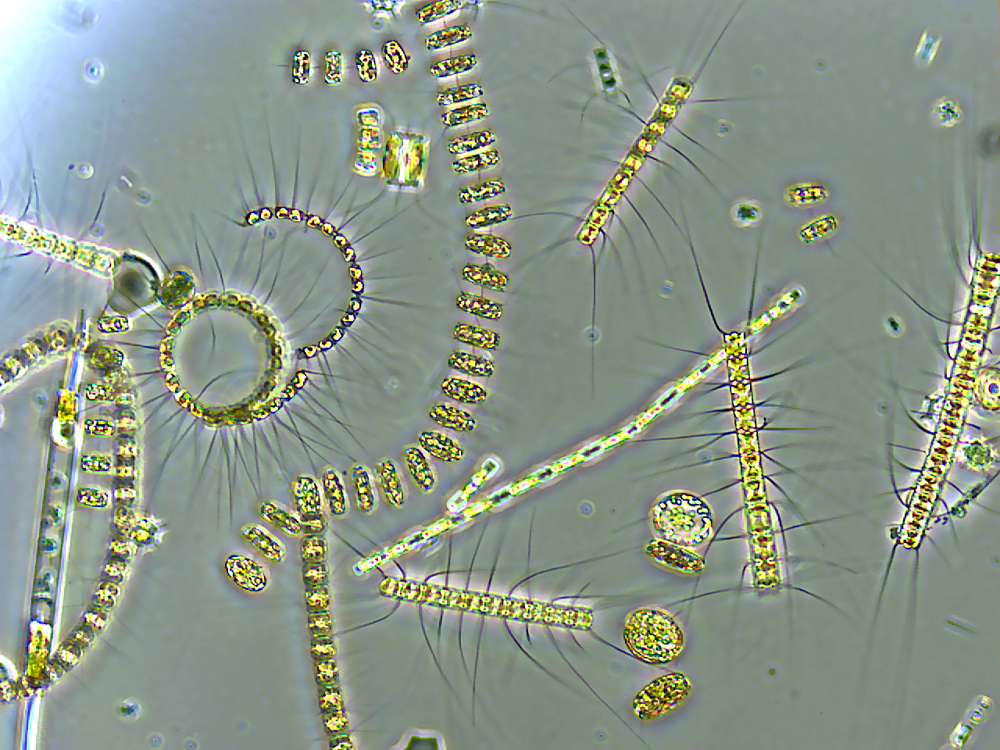

동물성 플랑크톤(Zooplankton)은 스스로 에너지를 합성하지 못하는 수생 갑각류를 총칭하는 말이다. 이들의 서식지는 해양, 호수, 강 등 다양하다. 광합성으로 에너지를 합성할 수 있는 식물성 플랑크톤과는 구별되며, 대부분은 육안으로 보기에는 너무 작다. 동물성 플랑크톤(zooplankton)이라는 이름은 그리스어의 '동물'을 뜻하는 zoon과 '떠도는 것'이라는 의미의 planktos가 합성되어 만들어졌다. 대부분의 동물성 플랑크톤은 너무 작아서 육안으로 구별하기 힘들다. 동물성 플랑크톤은 여러 수생생물에게 유용한 식량원이 되며, 일부는 인간에게 소비되기도 한다.
식물 플랑크톤(植物~, 영어: phytoplankton), 식물 플랑크톤은 플랑크톤 사회의 자가영양생물의 요소이다. 이 이름의 영어 낱말 phytoplankton(/ˌfaɪtoʊˈplæŋktən/)은 식물을 뜻하는 그리스어 낱말 φυτόν(파이튼)과 부유 물질을 뜻하는 그리스어 낱말 πλαγκτός(플랑크토스)에서 왔다.[1][2][3] 식물 플랑크톤은 땅의 나무와 다른 식물과 마찬가지로 광합성을 통해 에너지를 얻는다. 이것은 식물 플랑크톤이 태양으로부터 오는 빛을 가지고 있어야 한다는 것을 의미하며, 바다와 호수의 잘 빛나는 표면층(수광대)에서 산다. 육상 식물과 비교하여 식물 플랑크톤은 더 넓은 표면적에 분포하며, 계절적 변화에 덜 노출되며 나무보다 훨씬 빠른 회전율을 가진다. 결과적으로 식물 플랑크톤은 기후 변화에 전 세계적으로 빠르게 반응한다.
